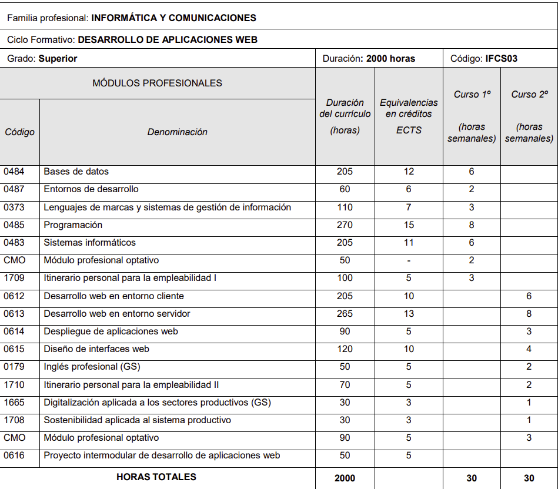
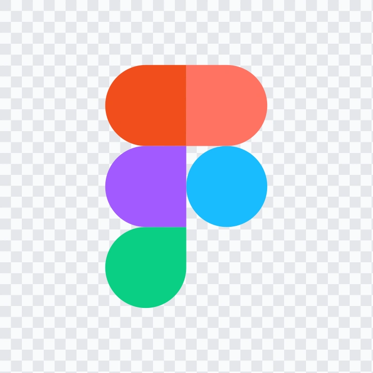

Lenguajes de Marcas
Qué he estudiado: Maquetación con HTML5, hojas de estilo CSS3, diseño adaptativo (responsive), selectores y lenguajes de datos XML/JSON.


Yo estoy cursando DAW (desarrollo de aplicaciones web) la cual es una titulación oficial de Formación Profesional (Ciclo Formativo de Grado Superior) perteneciente a la familia de Informática y Comunicaciones. Está diseñada para capacitarte en la creación, programación, diseño, despliegue y mantenimiento de sitios y aplicaciones web. El curso esta compuesto por 17 módulos profesionales que se deben impartir en un total de 2000 horas, además cuenta con practicas profesionales en empresa (FCT).

Qué he estudiado: Maquetación con HTML5, hojas de estilo CSS3, diseño adaptativo (responsive), selectores y lenguajes de datos XML/JSON.
Qué he estudiado: Instalación y administración de sistemas operativos (Linux y Windows), máquinas virtuales, gestión de usuarios, permisos y redes locales.
Qué he estudiado: Lógica de programación, algoritmos, estructuras de control, manejo de excepciones y desarrollo orientado a objetos (Java).
Qué he estudiado: Entornos integrados (VS Code / Eclipse), control de versiones con Git y GitHub, pruebas unitarias y diagramas UML.
Qué he estudiado: Diseños relacionales, diagramas E/R, creación de tablas y consultas avanzadas mediante lenguaje SQL (MySQL).
Qué he estudiado: Principios de diseño UX/UI, prototipado e interacción en Figma, guías de estilo, normas de accesibilidad (WCAG), CSS avanzado (Flexbox, CSS Grid) y animaciones.

Qué he estudiado: Programación en el navegador mediante JavaScript moderno, manipulación del DOM, eventos, consumo de APIs y uso de frameworks de cliente (como React, Angular o Vue).
Qué he estudiado: Lógica de negocio en el lado del servidor (PHP), arquitectura Model-View-Controller (MVC), autenticación de usuarios, cookies, sesiones y creación de APIs RESTful.
Qué he estudiado: Configuración de servidores web (Nginx, Apache), gestión de dominios, certificados SSL (HTTPS), contenedores (Docker) y despliegue en entornos en la nube.